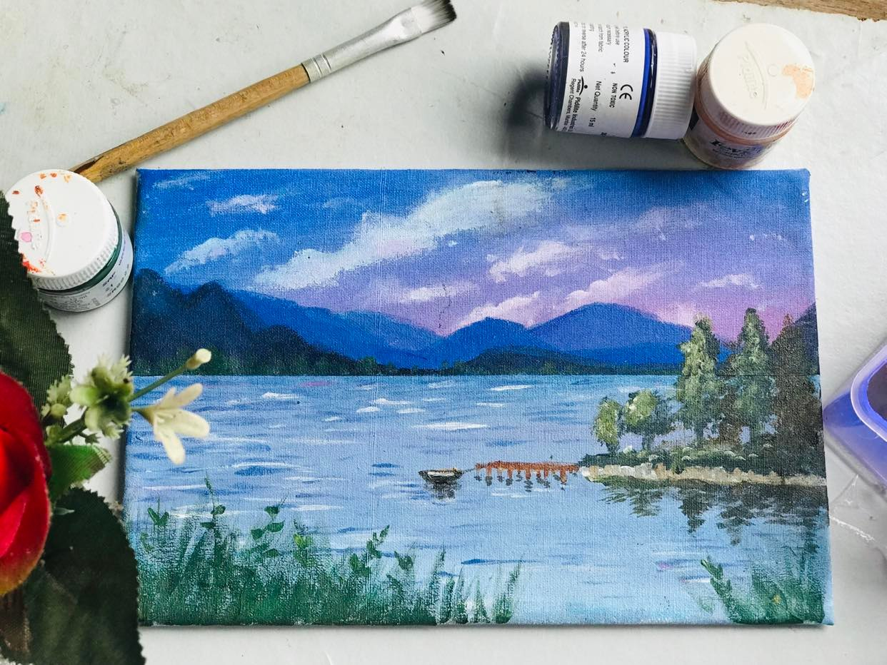

art, also called (to distinguish it from other art forms) visual art, a visual object or experience consciously created through an expression of skill or imagination. The term art encompasses diverse media such as painting, sculpture, printmaking, drawing, decorative arts, photography, and installation.
Types:
Painting
Abstract
Portrait
Sculpture
Literature
Poetry
Drama
Music
Acting
What is art?
Art is a highly diverse range of human activities engaged in creating visual, auditory, or performed artifacts— artworks—that express the author’s imaginative or technical skill, and are intended to be appreciated for their beauty or emotional power.
Art is often examined through the interaction of the principles and elements of art. The principles of art include movement, unity, harmony, variety, balance, contrast, proportion and pattern. The elements include texture, form, space, shape, color, value and line. The various interactions between the elements and principles of art help artists to organize sensorially pleasing works of art while also giving viewers a framework within which to analyze and discuss aesthetic ideas.
Painting
Painting is the practice of applying paint, pigment, color or other medium to a solid surface (called the "matrix" or "support").The medium is commonly applied to the base with a brush, but other implements, such as knives, sponges, and airbrushes, can be used.

Music
Music is the art of arranging sounds in time through the elements of melody, harmony, rhythm, and timbre.
Acting
Acting, the performing art in which movement, gesture, and intonation are used to realize a fictional character for the stage, for motion pictures, or for television.